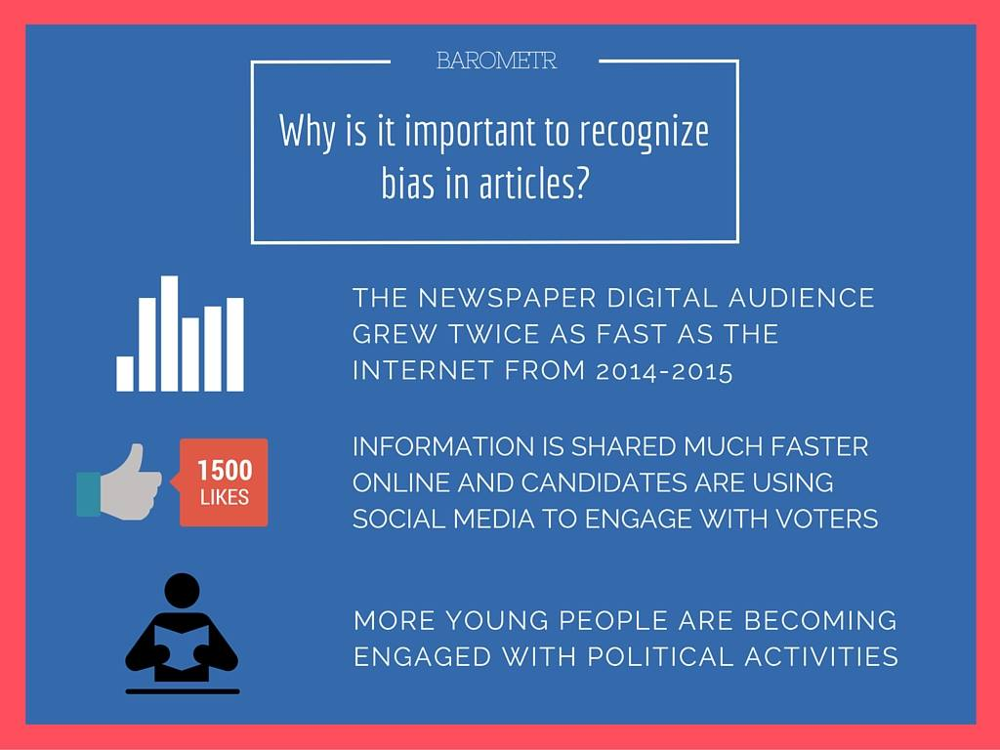

barometr: an extension that analyzes bias and sentiment in news articles
The barometr Team: Cameron Blandford, Tara Raj, Miranda Wang, and Cheng Xu.
THE PROBLEM
A survey of the millennial generation found that two thirds of respondents said they consume news online regularly, often on a social networking site. The volume and availability of news has grown exponentially through social media and more young people than ever before are engaging with political candidates. However, news can come from anywhere and articles that are shared on social media tend to be polarizing or biased towards one side.

OUR SOLUTION
barometr is a Chrome extension that measures the political bias in articles. We measure it in two ways: bias indicator and sentiment analysis. The bias indicator notes the party leaning of the articles. The sentiment analysis indicates whether the article is postive or negative. We use a barometer, or scale, to make the measurements to most accurately educate our users in a visually appealing way. And barometr improves over time as we have created a machine learning model. Read more about the technology we made that powers barometr here!
SAMPLE SCREENS
Hover over to view the barometrs!

Hillary Clinton: Bill 'obviously' wasn't knocking Obama with legacy comment
CNN politics | www.cnn.com

Carly Fiorina Has Relaunched ‘Carly for America’ With a New Mission
The Blaze | www.theblaze.com

The Sexism in American Politics
Huffpost Politics | www.huffingtonpost.com